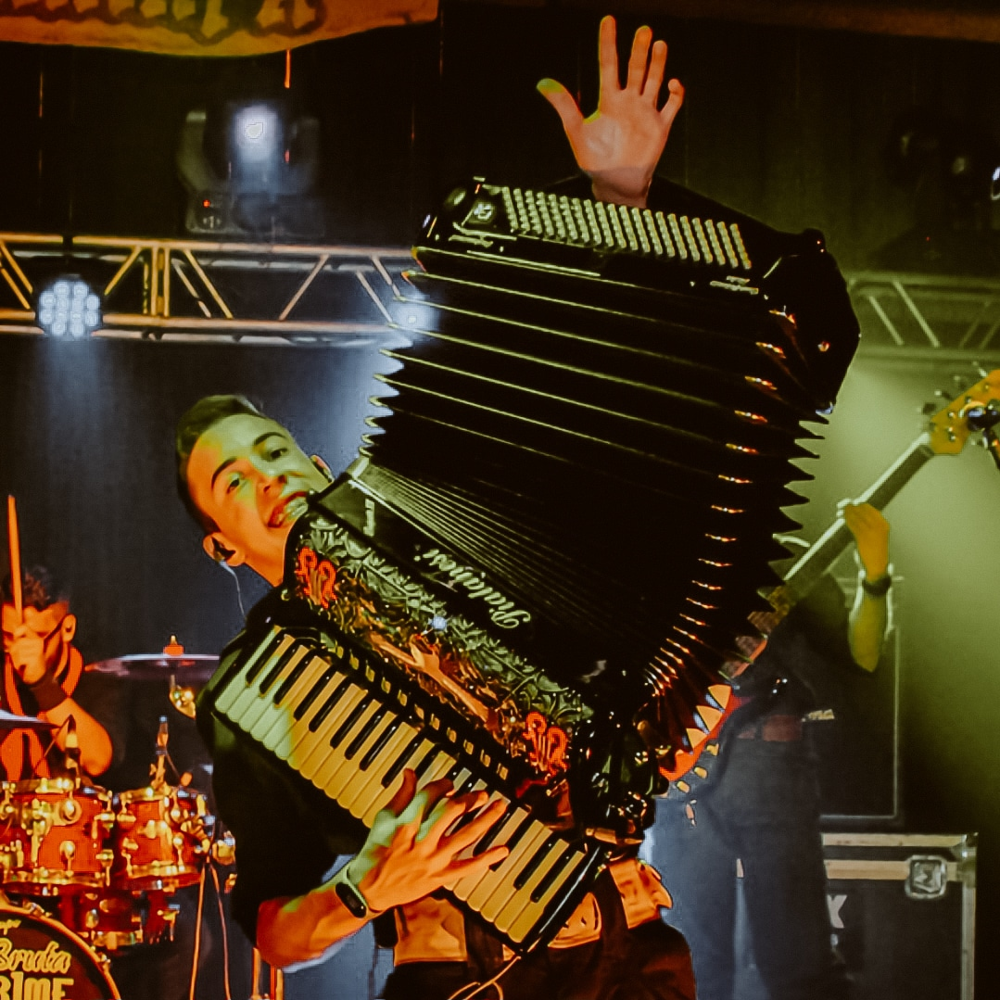

Eu sou Kauã Severgnini, um músico profissional especializado em acordeon, nascido em 27 de fevereiro de 2005 na cidade de Marques de Souza, no estado do Rio Grande do Sul. Atualmente, resido em Pouso Novo, onde, junto com minha família, gerencio uma propriedade rural dedicada à produção de leite e frangos de corte.
Minha jornada musical começou aos 8 anos de idade, quando comecei a estudar acordeon com o professor Dério de Marchi. Após dois anos de estudo, por razões pessoais e a demissão do meu professor, interrompi minhas atividades musicais até os 13 anos. Foi então que retomei meus estudos com o professor Juninho Gaiteiro, seguido por dois anos de aulas com o renomado professor Eneias de Bona, acordeonista da dupla Oswaldir e Carlos Magrão. Durante esse período, enfrentamos desafios decorrentes da pandemia de Covid-19.
Em 2022, integrei o Grupo Lida Bruta de Lajeado, atuando como gaiteiro e vocalista até o final de 2023, quando, devido a circunstâncias maiores, o grupo encerrou suas atividades. Posteriormente, juntei-me à Banda Werner e Cia Musical, desempenhando os papéis de tecladista e gaiteiro. Atualmente, trabalho como freelancer para artistas locais, sou membro fixo do Grupo Os Centauros de Teutônia e leciono música em Pouso Novo.
Paralelamente à minha carreira musical, estou cursando Engenharia de Software na Uninter e Licenciatura em Música na Uniasselvi, ambas modalidades de ensino a distância.
Considero-me uma pessoa completa, com trabalho, família, amigos e tudo o que é necessário para a felicidade. Meus objetivos futuros incluem concluir minhas graduações, conquistar o título no Enart e tornar-me acordeonista em um grupo de renome ou para um artista reconhecido.
Atenciosamente, Kauã Severgnini